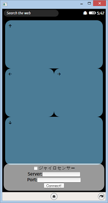

<!DOCTYPE html>
<html lang="en"></html>
<head>
  <meta charset="UTF-8">
  <title>tutorial</title>
  <link rel="stylesheet" href="style.css" type="text/css">
</head>
<body>
  <div class="wrapper">
    <h1>Tutorial</h1>
    <article>
      <h2>Let's Start!</h2>
      <section>次のコマンドを入力します。Gitが必要です。<br>
        <pre>git clone https://github.com/shundroid/Sphero-Server.git</pre>
      </section>
    </article>
    <article>
      <h2>node_modulesのインストール</h2>
      <section>次のコマンドを、package.jsonが存在するフォルダで入力します。node.jsが必要です。<br>
        <pre>npm install</pre>
      </section>
    </article>
    <article>
      <h2>SpheroとBluetooth接続する</h2>
      <section>Bluetooth環境とSpheroが必要です。<br>それぞれのサイトで、「Bluetooth接続とシリアルポートの取得」の方法を確認してください。<br>
        <ul>
          <li><a href="http://fabble.cc/shundroid/spherowin8-1">Windowsの場合（3. Bluetooth接続のみを参照してください）</a></li>
          <li><a href="https://github.com/comozilla/Sphero-wakuwaku/wiki/%E7%92%B0%E5%A2%83%E8%A8%AD%E5%AE%9A">その他（Bluetooth 接続の部分のみ ) </a></li>
        </ul>
      </section>
    </article>
    <article>
      <h2>設定の変更</h2>
      <section>
        <pre>public_html/setting.json</pre>を参照し、次のように編集します。
        <script src="https://gist.github.com/shundroid/c9a8e7ff42ed6ea48a9a.js"></script>
      </section>
    </article>
    <article>
      <h2>実行！</h2>
      <section>次のコマンドを実行してください。<br>
        <pre>node main.js</pre><br>これでサーバーが起動できました！<br>失敗した？何回か試してください。それでもだめなら、IPアドレスやポート、シリアルポートを確認してください。
      </section>
    </article>
    <article>
      <h2>デバイスから接続！</h2>
      <section>Spheroを操作したいデバイスから、次のURLにブラウザでアクセスしてください。<br>そのとき、node.jsを実行したデバイスと、この操作するデバイスを、同一のネットワークへ接続してください。<br>
        <pre>http://&lt;先ほどのIPアドレス&gt;:&lt;先ほどのポート&gt;/</pre>
      </section>
    </article>
    <article>
      <h2>コマンドを送ろう！</h2>
      <section>textboxから、
        <pre>color:red</pre>や、
        <pre>color:green</pre>などと入力してみてください。<br>色が変わると成功です！
      </section>
    </article>
    <article>
      <h2>Firefox OSの場合</h2>
      <section>リポジトリ内、
        <pre>firefoxos/</pre>ディレクトリを、FirefoxのWebIDEで開いてください。<br>firefox os内にインストールし、IPアドレス、ポートを設定し、connect!ボタンをタップしてください。<br>矢印キーでSpheroを動かしたり、ジャイロセンサーチェックボックスをオンにすると、デバイスを傾けることで、操作できるようになります。
      </section>
    </article>
    <article>
      <h2>お願い！</h2>
      <section>このチュートリアルは編集途中です！<br>もし、このチュートリアルで成功したなら、次このチュートリアルを読む方がわかりやすいように、編集していただけると助かります。<br>このサイトはGithubで構成されています。よろしくお願いします！<br><a href="https://github.com/shundroid/shundroid.github.io/" class="btn">Open Github</a></section>
    </article>
  </div>
</body>